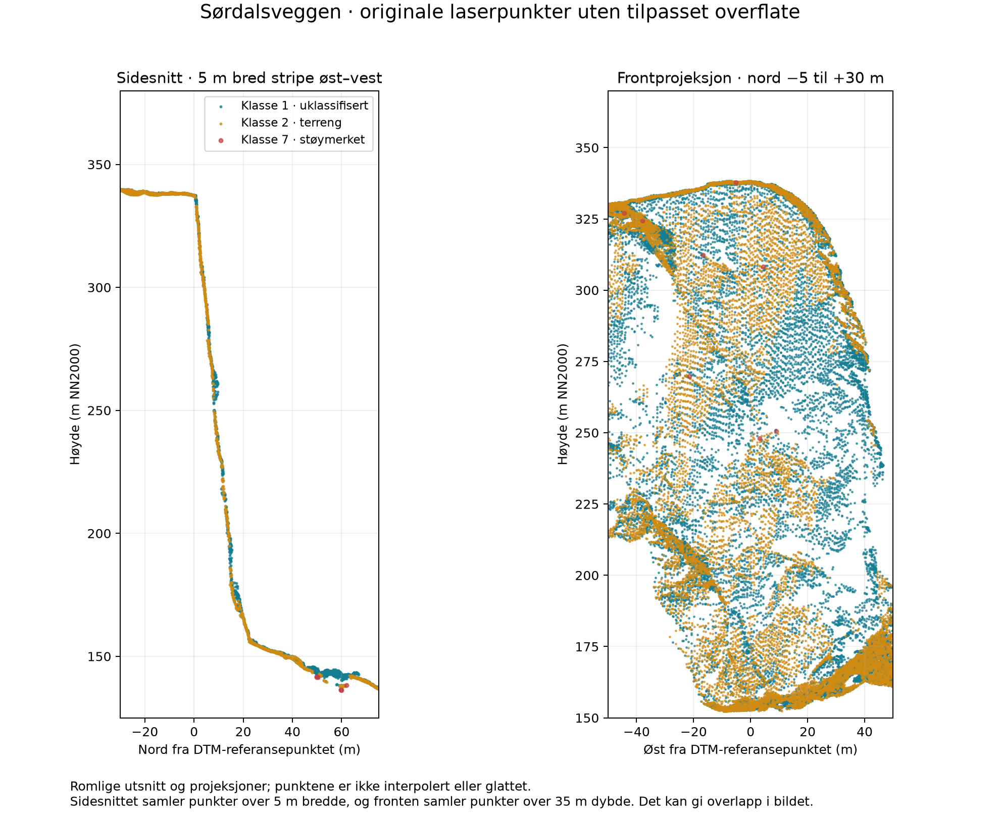
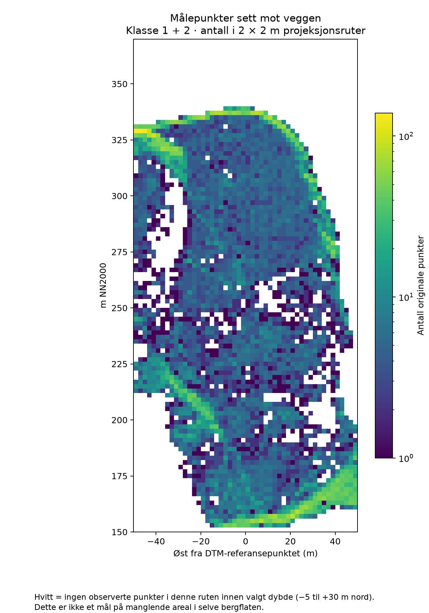
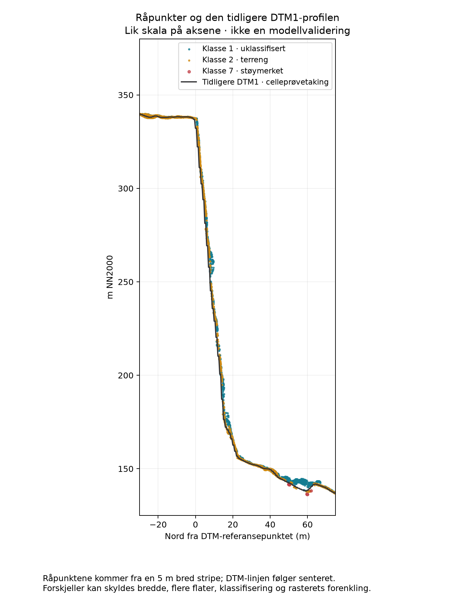

Snitt, punktdekning og sammenligning med DTM1
Dette er inspeksjon av målte punkter. Ingen ny overflate er interpolert eller tilpasset.

Råpunktsnitt med lik skala på aksene. Det smale sidesnittet og den bredere frontprojeksjonen har ulike utvalg.

Hvitt betyr ingen observasjoner i det valgte dybdeintervallet. Det måler ikke andelen manglende bergflate.

DTM1 er en terrengmodell med én høyde per rute. Sammenligningen er ikke en uavhengig kontroll av målenøyaktighet.
Terrengdata: Kartverket · NDH Lofoten 2pkt 2017 · EUREF89 UTM33 / NN2000. Original ZIP og LAZ beholdes lokalt. Metode og datagrunnlag · Til prosjektrapporten · .